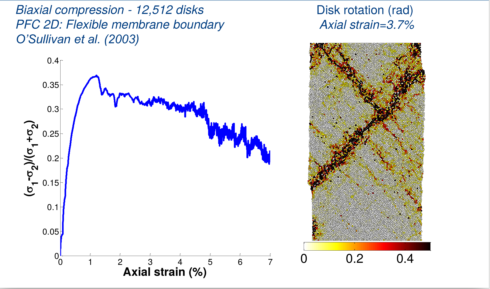
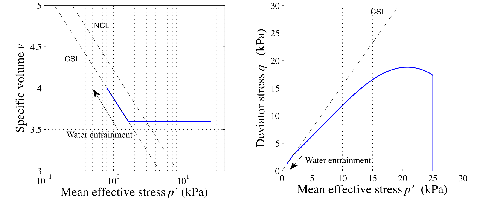

Numerical methods in Geotechnical Engineering
FEM, MPM and DEM
Krishna Kumar, kks32@cam.ac.uk
University of Cambridge


5R7 Lent 2017.
Multiscale modelling in geomechanics
Discrete Element Method
- Particle level interaction based on Newton's equation of motion
- The contact force is computed as:
- The contact tangential force is computed in a similar way, but has a frictional limit: $$ F_t = \mu F_n $$
- Solve the Newton's equation of motion and the angular momentum (including rotational resistance) $$F_n =m \times a $$
$F_n=\left\{ \begin{matrix} \text{ }0\text{ },\text{ }{{\delta }_{n}}>0 \\
-{{k}_{n}}{{\delta }_{n}}-{{\gamma }_{n}}\frac{d{{\delta }_{n}}}{dt},\text{ }{{\delta }_{n}}<0 \\
\end{matrix} \right.$
DEM Strain localisation
DEM: Dilation

DEM Friction

DEM Limitations: number of particles
DEM: Pros and Cons
- Can simulate individual grains and their behaviour
- Now proven as a tool that can reproduce characteristic mechanical behaviour of sand
- There is currently a transition towards the use of high performance computing
- DEM can allow us to explore stress states that are not easily attainable in the lab
- DEM can complement laboratory testing where interpretation is complex
- DEM can inform design guidelines for problems that are driven by particle-scale interaction
- Validation is important, plotting the critical state line can be useful to assess whether a model is reasonable
- Modelling exact particle shapes - Level Set algorithms
- Modelling realistic number of particles is difficult
LBM - DEM simulation of granular collapse in fluid
aspect ratio 'a' of 6 on a slope of 5*
Lattice Boltzmann - MRT
\[f_{i}(x + dx, t +\Delta t) - f_{i}(x, t) = -S_{\alpha i}(
f_{i}(x, t) - f_{i} ^ {eq}(x, t))\]
- $S_{\alpha i}$ is the collisional matrix.
- Probability density of finding a particle : $f(x,\varepsilon, t) $, where, x is position, $\varepsilon$ is velocity, and t is time.
LBM-DEM fluid-solid coupling
$$\Delta t_{s}=\frac{\Delta t}{\mathit{n}_{s}} \qquad (\mathit{n}_{s}=[\Delta t/ \Delta t_{D}]+1) $$
- At every fluid iteration, $\mathit{n}_{s}$ sub-steps of DEM iterations are performed using the time step $\Delta t_{s}$.
- The hydrodynamic force is unchanged during the sub-cycling.
LBM laminar & turbulent flows
Smagorinsky model (LES):
$\nu_{s}(x,t)=(C_s \Delta)^2\sqrt{S_{ij}S_{ij}} \mbox{ ; } S_{ij}=\frac{1}{2}(\frac{\partial u_i}{\partial x_j}+\frac{\partial u_j}{\partial x_i})$Karman Vortex Street
LBM - DEM a = 0.8 & 10,000 partilces
- LBM Nodes = 50 Million : DEM grains = 10000 discs
- Real-time = 2 seconds
- Run-time = 4 hours
- Speedup = 25x on a Tesla K20
LBM multi-component multi-phase
Finite Element Analysis

Strong form

Mesh-based vs Mesh-free techniques
Material Point Method
Material Point Method
MPM slope failure
MPM slope failure
Two-phase formulation
Trends in large-deformation analysis of landslide mass movements with particular emphasis on the material point method (Soga et al 2016)
Depth-averaged MPM
Taka Kobayashi
Mechanism of submarine runout
Depth-averaged MPM
Taka Kobayashi
Lattice Element Method
Lattice Element Method - Fluid coupling
- First assume injection pressure $P_{in}$ and injection rate $Q_{in}$ at injection point
- Solve fluid pressure at each fluid node
- Convert pressure to node force and solve LEM to update fracture aperture
- Repeat the above process until convergence
LEM hydraulic fracturing
John Wong, University of Cambridge
Thank you!
Krishna Kumar, kks32@cam.ac.uk
www.cb-geo.com